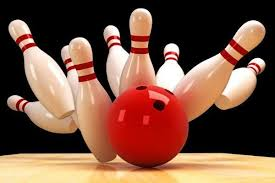
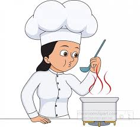

when i am not working. i like spending time with my family and enjoy life
family
i love spending time with my family.we love hiking during summer and my kid love bowling so do i. i love working out it keep me going and fit. i like swimming, i love cooking and eating. im a certified chef, i like cooking for fun.
i love learning new skills for fun and i love to sharpen my skills by learning more about my craft. my family help me become a better person. i thrive for greatness because of my kids. my family is eveything to me. i love spending time with my family.
cooking
i love cooking as a chef i feel soo relaxed. when i cook my family enjoying . cooking a meal is how i show my love. i love making five stars michelin meal. i did my internship at one of the big michelin restaurent in NYC. with this knowledge i love combining with my baking skills and make amzing meals for family and friends.